Chapter 7 Spatial Analysis
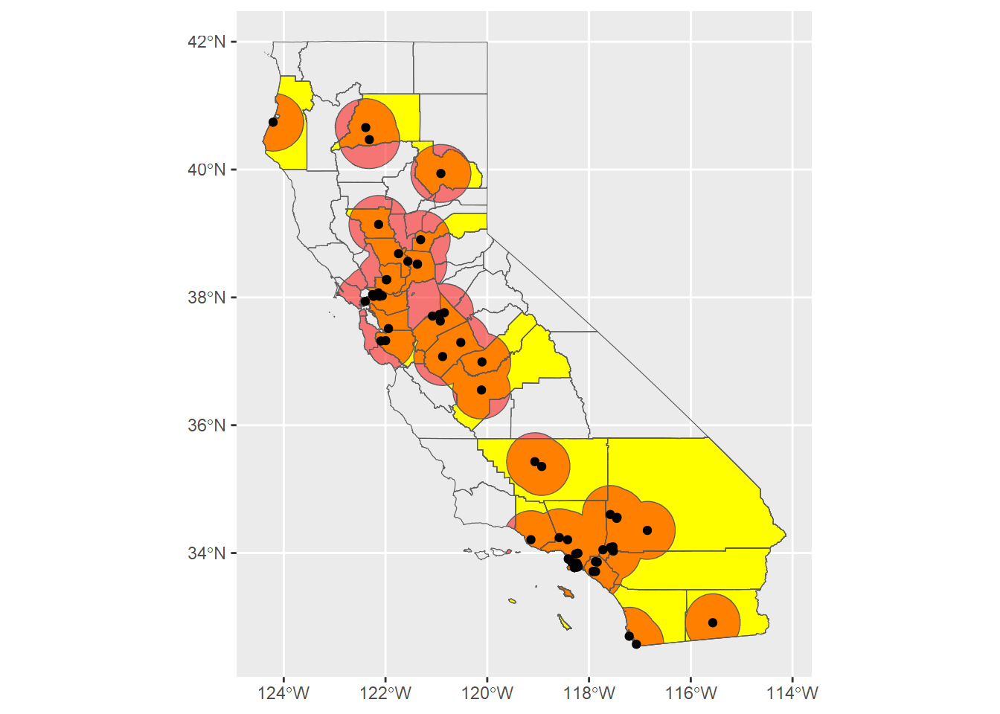
Spatial analysis provides an expansive analytical landscape with theoretical underpinnings dating to at least the 1950s (Berry and Marble (1968)), contributing to the development of geographic information systems as well as spatial tools in more statistically oriented programming environments like R. We won’t attempt to approach any thorough coverage of these methods, and we would refer the reader for more focused consideration using R-based methods to sources such as Lovelace et al. (2019) and Hijmans (n.d.).
In this chapter, we’ll continue working with spatial data, and explore spatial analysis methods. We’ll look at a selection of useful geospatial abstraction and analysis methods, what are also called geoprocessing tools in a GIS. The R Spatial world has grown in recent years to include an increasingly good array of tools. This chapter will focus on vector GIS methods, and here we don’t mean the same thing as the vector data objects in R nomenclature (Python’s pandas package, which uses a similar data structure, calls these “series” instead of vectors), but instead on feature geometries and their spatial relationships based on the coordinate referencing system.
7.1 Data Frame Operations
But before we get into those specifically spatial operations, it’s important to remember that feature data at least are also data frames, so we can use the methods we already know with them. For instance, we can look at properties of variables and then filter for features that meet a criterion, like all climate station points at greater than 2,000 m elevation, or all above 38°N latitude. To be able to work with latitude as a variable, we’ll need to use remove=F (the default is to remove them) to retain them when we use st_as_sf.
Adding a basemap with maptiles: We’d like to have a basemap, so we’ll create one with the maptiles package (install if you don’t have it.) Warning: the get_tiles function goes online to get the basemap data, so if you don’t have a good internet connection or the site goes down, this may fail. We can then display the basemap with tm_rgb.
For temperature, we’ll use a continuous color scale of “hcl.blue_red” to go from cold (blue) to warm (red).
library(tmap); library(RColorBrewer); library(sf); library(tidyverse);
library(maptiles); library(igisci)
tmap_mode("plot")
newname <- unique(str_sub(sierraFeb$STATION_NAME, 1,
str_locate(sierraFeb$STATION_NAME, ",")-1))
sierraFeb2000 <- st_as_sf(bind_cols(sierraFeb,STATION=newname) %>%
dplyr::select(-STATION_NAME) %>%
filter(ELEVATION >= 2000, !is.na(TEMPERATURE)),
coords=c("LONGITUDE","LATITUDE"), remove=F, crs=4326)
bounds=tmaptools::bb(sierraFeb2000, ext=1.2)
sierraBase <- get_tiles(sierraFeb2000, provider="OpenStreetMap")
tm_shape(sierraBase, bbox=bounds) +
tm_rgb() + # tm_mv("red", "green", "blue"), col.scale = tm_scale_rgb(maxValue = 255)) +
tm_shape(sierraFeb2000) +
tm_dots(fill = "TEMPERATURE", #midpoint=NA,
fill.scale=tm_scale_continuous(values="hcl.blue_red"),
size=1, fill.legend=tm_legend(frame=F)) +
tm_text(text = "STATION", size=0.5, auto.placement=T, xmod=0.5, ymod=0.5) +
tm_graticules(lines=F)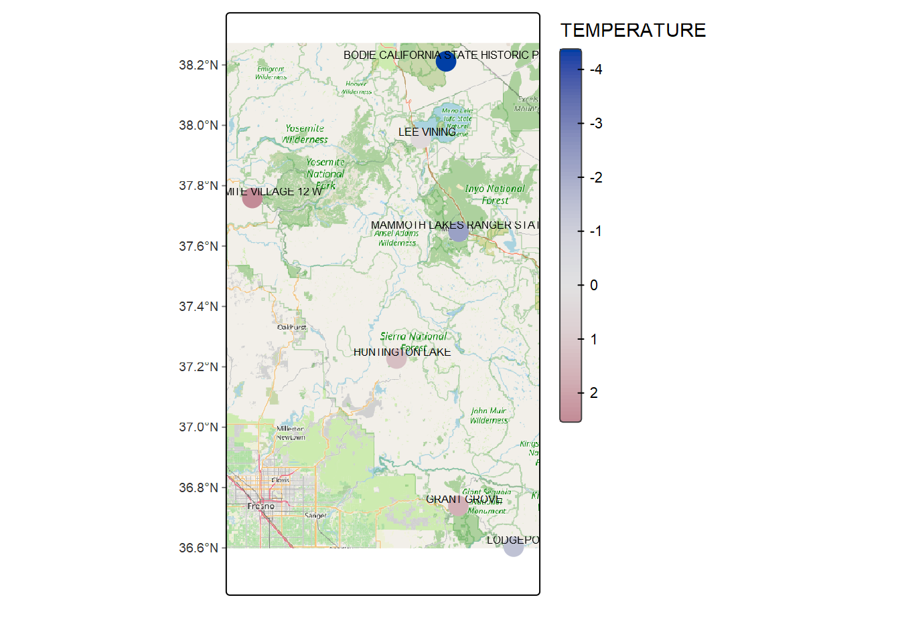
> Note that you could also usetm_basemap for this, but for some reason in this case the maptiles::get_tiles approach works better.
basemap <- get_tiles(CA_counties, provider="Esri.WorldTerrain")
cols = names(basemap)
bounds=tmaptools::bb(sierraFeb2000, ext=1.2)
CA <- tm_shape(basemap,bbox=bounds) + tm_rgb() + #tm_mv(cols[1],cols[2],cols[3])) +
tm_shape(CA_counties) + tm_borders(lwd=1, col="red") +
tm_graticules(lines=F,labels.rot=c(0,90)) +
tm_title("CA counties on basemap")Now let’s include LATITUDE. Let’s see what we get by filtering for both ELEVATION >= 2000 and LATITUDE >= 38:
## Simple feature collection with 1 feature and 7 fields
## Geometry type: POINT
## Dimension: XY
## Bounding box: xmin: -119.0142 ymin: 38.2119 xmax: -119.0142 ymax: 38.2119
## Geodetic CRS: WGS 84
## # A tibble: 1 × 8
## COUNTY ELEVATION LATITUDE LONGITUDE PRECIPITATION TEMPERATURE STATION
## * <fct> <dbl> <dbl> <dbl> <dbl> <dbl> <chr>
## 1 Mono 2551. 38.2 -119. 39.6 -4.4 BODIE CALIFORNI…
## # ℹ 1 more variable: geometry <POINT [°]>The only one left is Bodie (Figure 7.1). Maybe that’s why Bodie, a ghost town now, has such a reputation for being so friggin’ cold (at least for California). I’ve been snowed on there in summer.
FIGURE 7.1: A Bodie scene, from Bodie State Historic Park (https://www.parks.ca.gov/)
7.1.1 Using grouped summaries, and filtering by a selection
We’ve been using February Sierra climate data for demonstrating various things, but this wasn’t the original form of the data downloaded, so let’s look at the original data and use some dplyr methods to restructure it, in this case to derive annual summaries. We’ll use the monthly normals to derive annual values.
We looked at the very useful group_by ... summarize() group-summary process earlier 3.4.5. We’ll use this and a selection process to create an annual Sierra climate dataframe we can map and analyze. The California monthly normals were downloaded from the National Centers for Environmental Information at NOAA, where you can select desired parameters, monthly normals as frequency, and limit to one state.
- https://www.ncei.noaa.gov/
- https://www.ncei.noaa.gov/products/land-based-station/us-climate-normals
- https://www.ncei.noaa.gov/access/search/data-search/normals-monthly-1991-2020
First we’ll have a quick look at the data to see how it’s structured. These were downloaded as monthly normals for the State of California, as of 2010, so there are 12 months coded 201001:201012, with obviously the same ELEVATION, LATITUDE, and LONGITUDE, but monthly values for climate data like MLY-PRCP-NORMAL, etc.
## # A tibble: 15 × 11
## STATION STATION_NAME ELEVATION LATITUDE LONGITUDE DATE `MLY-PRCP-NORMAL`
## <chr> <chr> <chr> <chr> <chr> <dbl> <dbl>
## 1 GHCND:USC… TWENTYNINE … 602 34.12806 -116.036… 201001 13.2
## 2 GHCND:USC… TWENTYNINE … 602 34.12806 -116.036… 201002 15.0
## 3 GHCND:USC… TWENTYNINE … 602 34.12806 -116.036… 201003 11.4
## 4 GHCND:USC… TWENTYNINE … 602 34.12806 -116.036… 201004 3.3
## 5 GHCND:USC… TWENTYNINE … 602 34.12806 -116.036… 201005 2.29
## 6 GHCND:USC… TWENTYNINE … 602 34.12806 -116.036… 201006 0.25
## 7 GHCND:USC… TWENTYNINE … 602 34.12806 -116.036… 201007 12.2
## 8 GHCND:USC… TWENTYNINE … 602 34.12806 -116.036… 201008 20.6
## 9 GHCND:USC… TWENTYNINE … 602 34.12806 -116.036… 201009 10.2
## 10 GHCND:USC… TWENTYNINE … 602 34.12806 -116.036… 201010 5.08
## 11 GHCND:USC… TWENTYNINE … 602 34.12806 -116.036… 201011 5.08
## 12 GHCND:USC… TWENTYNINE … 602 34.12806 -116.036… 201012 14.7
## 13 GHCND:USC… BUTTONWILLO… 82 35.4047 -119.4731 201001 32.5
## 14 GHCND:USC… BUTTONWILLO… 82 35.4047 -119.4731 201002 30.0
## 15 GHCND:USC… BUTTONWILLO… 82 35.4047 -119.4731 201003 30.7
## # ℹ 4 more variables: `MLY-SNOW-NORMAL` <dbl>, `MLY-TAVG-NORMAL` <dbl>,
## # `MLY-TMAX-NORMAL` <dbl>, `MLY-TMIN-NORMAL` <dbl>To get just the Sierra data, it seemed easiest to just provide a list of relevant county names to filter the counties, do a bit of field renaming, then read in a previously created selection of Sierra weather/climate stations.
sierraCounties <- st_make_valid(CA_counties) %>%
filter(NAME %in% c("Alpine","Amador","Butte","Calaveras","El Dorado",
"Fresno","Inyo","Kern","Lassen","Madera","Mariposa",
"Mono","Nevada","Placer","Plumas","Sacramento","Shasta",
"Sierra","Tehama","Tulare","Tuolumne","Yuba"))
normals <- read_csv(ex("sierra/908277.csv")) %>%
mutate(STATION = str_sub(STATION,7,str_length(STATION)))
sierraStations <- read_csv(ex("sierra/sierraStations.csv"))To get annual values, we’ll want to use the stations as groups in a group_by %>% summarize process. For values that stay the same for a station (LONGITUDE, LATITUDE, ELEVATION), we’ll use first() to get just one of the 12 identical monthly values. For values that vary monthly, we’ll sum() the monthly precipitations and get the mean() of monthly temperatures to get appropriate annual values. We’ll also use a right_join to keep only the stations that are in the Sierra. Have a look at this script to make sure you understand what it’s doing; it’s got several elements you’ve been introduced to before, and that you should understand. At the end, we’ll use st_as_sf to make sf data out of the data frame, and retain the LONGITUDE and LATITUDE variables in case we want to use them as separate variables (Figure 7.2).
sierraAnnual <- right_join(sierraStations,normals,by="STATION") %>%
filter(!is.na(STATION_NA)) %>%
dplyr::select(-STATION_NA) %>%
group_by(STATION_NAME) %>% summarize(LONGITUDE = first(LONGITUDE),
LATITUDE = first(LATITUDE),
ELEVATION = first(ELEVATION),
PRECIPITATION = sum(`MLY-PRCP-NORMAL`),
TEMPERATURE = mean(`MLY-TAVG-NORMAL`)) %>%
mutate(STATION_NAME = str_sub(STATION_NAME,1,str_length(STATION_NAME)-6)) %>%
filter(PRECIPITATION > 0) %>% filter(TEMPERATURE > -100) %>%
st_as_sf(coords = c("LONGITUDE", "LATITUDE"), crs=4326, remove=F)
ggplot() +
geom_sf(data=CA_counties, aes(), fill="gray") +
geom_sf(data=sierraCounties, aes(), fill="white") +
geom_sf(data=sierraAnnual, aes(col=PRECIPITATION)) +
scale_color_gradient(low="orange", high="blue") 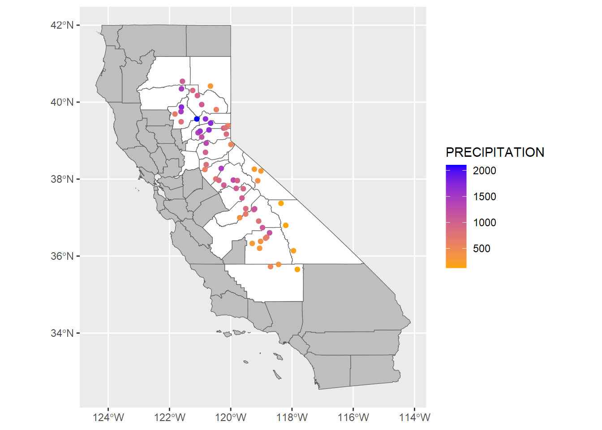
FIGURE 7.2: Sierra data
7.2 Spatial Analysis Operations
Again, there is a lot more to spatial analysis than we have time to cover. But we’ll explore some particularly useful spatial analysis operations, especially those that contribute to statistical analysis methods we’ll be looking at soon. We’ll start by continuing to look at subsetting or filtering methods, but ones that use spatial relationships to identify what we want to retain or remove from consideration.
7.2.1 Using topology to subset
Using spatial relationships can be useful in filtering our data, and there are quite a few topological relationships that can be explored. See Lovelace et al. (2019) for a lot more about topological operations. We’ll look at a relatively simple one that identifies whether a feature is within another one, and apply this method to filter for features within a selection of five counties, which we’ll start by identifying by name.
Then we’ll use those counties to select towns (places) that occur within them …
CA_places <- st_read(ex("sierra/CA_places.shp"))
nCAsel <- lengths(st_within(CA_places, nSierraCo)) > 0 # to get TRUE & FALSE
nSierraPlaces <- CA_places[nCAsel,]… and do the same for the sierraFeb weather stations (Figure 7.3).
sierra <- st_as_sf(read_csv(ex("sierra/sierraFeb.csv")),
coords=c("LONGITUDE","LATITUDE"), crs=4326)
nCAselSta <- lengths(st_within(sierra, nSierraCo)) > 0 # to get TRUE & FALSE
nSierraStations <- sierra[nCAselSta,]library(tmap)
tmap_mode("plot")
tm_basemap("Esri.WorldTopoMap") +
tm_shape(nSierraCo) + tm_borders() + tm_text("NAME", size=0.7) +
# tm_shape(nSierraStations) + tm_symbols(fill="blue") +
tm_shape(nSierraPlaces) + tm_symbols(alpha=0.99) +
tm_text("AREANAME", size=0.5)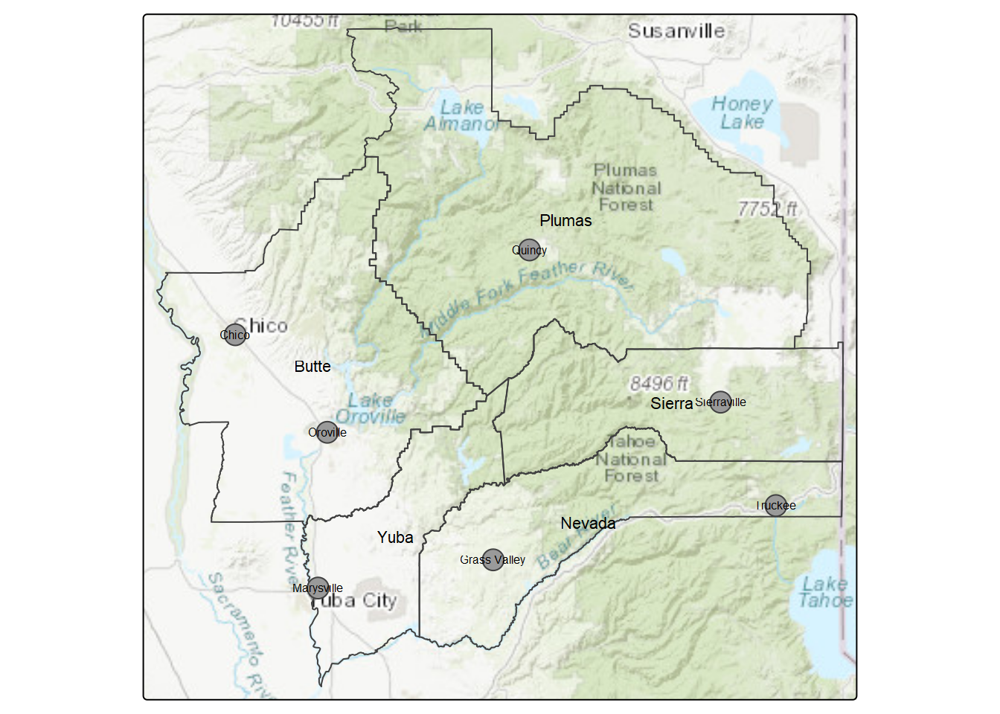
FIGURE 7.3: Northern Sierra stations and places
So far, the above is just subsetting for a map, which may be all we’re wanting to do, but we’ll apply this selection to a distance function in the next section to explore a method using a reduced data set.
7.2.2 Centroid
Related to the topological concept of relating features inside other features is creating a new feature in the middle of an existing one, specifically a point placed in the middle of a polygon: a centroid. Centroids are useful when you need point data for some kind of analysis, but that point needs to represent the polygon it’s contained within. The methods we’ll see in the code below include:
st_centroid(): to derive a single point for each tract that should be approximately in its middle. It must be topologically contained within it, not fooled by an annulus (“doughnut”) shape, for example.st_make_valid(): to make an invalid geometry valid (or just check for it). This function has just become essential now thatsfsupports spherical instead of just planar data, which ends up containing “slivers” where boundaries slightly under- or overlap since they were originally built from a planar projection. Thest_make_valid()appears to make minor (and typically invisible) corrections to these slivers.st_bbox: reads the bounding box, or spatial extent, of any dataset, which we can then use to set the scale to focus on that area. In this case, we’ll focus on the census centroids instead of the statewideCAfreewaysfor instance.
Let’s see the effect of the centroids and bbox. We’ll start with all county centroids (Figure 7.4).
library(tidyverse); library(sf); library(igisci)
CA_counties <- st_make_valid(CA_counties) # needed fix for data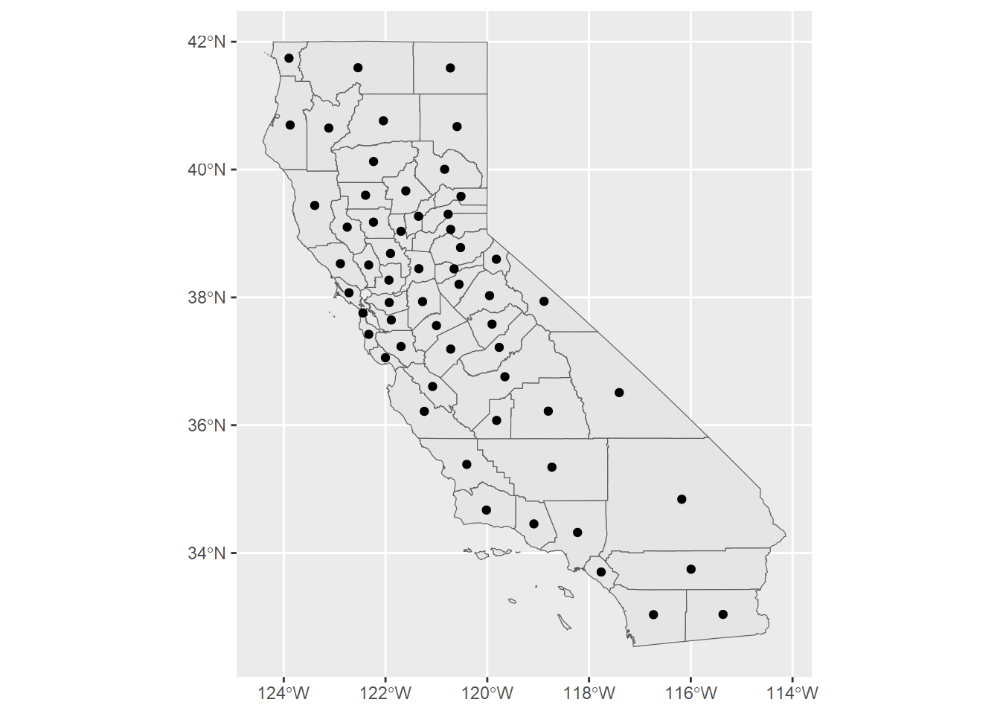
FIGURE 7.4: California county centroids
Here’s an example that also applies the bounding box to establish a mapping scale that covers the Bay Area while some of the data (TRI locations and CAfreeways) are state-wide (Figure 7.5).
library(tidyverse)
library(sf)
library(igisci)
BayAreaTracts <- st_make_valid(BayAreaTracts)
censusCentroids <- st_centroid(BayAreaTracts)
TRI_sp <- st_as_sf(read_csv(ex("TRI/TRI_2017_CA.csv")),
coords = c("LONGITUDE", "LATITUDE"),
crs=4326) # simple way to specify coordinate reference
bnd <- st_bbox(censusCentroids)
ggplot() +
geom_sf(data = BayAreaCounties, aes(fill = NAME)) +
geom_sf(data = censusCentroids) +
geom_sf(data = CAfreeways, color = "grey", alpha=0.5) +
geom_sf(data = TRI_sp, color = "yellow") +
coord_sf(xlim = c(bnd[1], bnd[3]), ylim = c(bnd[2], bnd[4])) +
labs(title="Bay Area Counties, Freeways and Census Tract Centroids")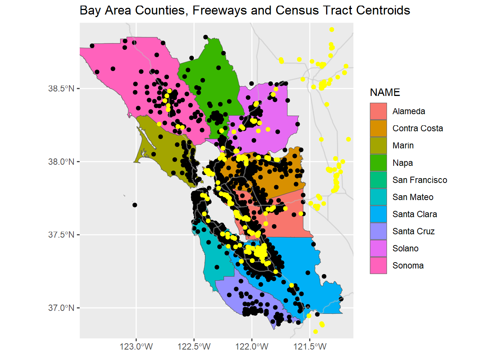
FIGURE 7.5: Map scaled to cover Bay Area tracts using a bbox
7.2.3 Distance
Distance is a fundamental spatial measure, used to not only create spatial data (distance between points in surveying or distance to GNSS satellites) but also to analyze it. Note that we can either be referring to planar (from projected coordinate systems) or spherical (from latitude and longitude) great-circle distances. Two common spatial operations involving distance in vector spatial analysis are (a) deriving distances among features, and (b) creating buffer polygons of a specific distance away from features. In raster spatial analysis, we’ll look at deriving distances from target features to each raster cell.
But first, let’s take a brief excursion up the Nile River, using great circle distances to derive a longitudinal profile and channel slope…
7.2.3.1 Great circle distances
Earlier we created a simple river profile using Cartesian coordinates in metres for x, y, and z (elevation), but what if our xy locations are in geographic coordinates of latitude and longitude? Using the haversine method, we can derive great-circle (“as the crow flies”) distances between latitude and longitude pairs. The following function uses a haversine algorithm described at https://www.movable-type.co.uk/scripts/latlong.html (Calculate Distance, Bearing and More Between Latitutde/Longitude Points" (n.d.)) to derive these distances in metres, provided lat/long pairs in degrees as haversineD(lat1,lon1,lat2,lon2):
haversineD <- function(lat1deg,lon1deg,lat2deg,lon2deg){
lat1 <- lat1deg/180*pi; lat2 <- lat2deg/180*pi # convert to radians
lon1 <- lon1deg/180*pi; lon2 <- lon2deg/180*pi
a <- sin((lat2-lat1)/2)^2 + cos(lat1)*cos(lat2)*sin((lon2-lon1)/2)^2
c <- 2*atan2(sqrt(a),sqrt(1-a))
c * 6.371e6 # mean earth radius is ~ 6.371 million metres
}We’ll use these to help us derived channel slope where we need the longitudinal distance in metres along the Nile River, but we have locations in geographic coordinates (crs 4326). But first, here’s a few quick checks on the function since I remember that 1 minute (1/60 degree) of latitude is equal to 1 nautical mile (NM) or ~1.15 statute miles, and the same applies to longitude at the equator. Then longitude is half that at 60 degrees north or south.
paste("1'lat=",haversineD(30,120,30+1/60,120)/0.3048/5280,"miles at 30°N")
paste("1'lat=",haversineD(30,120,30+1/60,120)/0.3048/6076,"NM at 30°N")
paste("1'lon=",haversineD(0,0,0,1/60)/0.3048/6076,"NM at the equator")
paste("1'lon=",haversineD(60,0,60,1/60)/0.3048/6076,"NM at 60°N")## [1] "1'lat= 1.15155540233128 miles at 30°N"
## [1] "1'lat= 1.000693305515 NM at 30°N"
## [1] "1'lon= 1.00069330551494 NM at the equator"
## [1] "1'lon= 0.500346651434429 NM at 60°N"Thanks to Stephanie Kate in my Fall 2020 Environmental Data Science course at SFSU, we have geographic coordinates and elevations in metres for a series of points along the Nile River, including various tributaries. We’ll focus on the main to Blue Nile and generate a map (Figure 7.6) and longitudinal profile (Figure 7.7), using great circle distances along the channel.
library(igisci); library(tidyverse)
bNile <- read_csv(ex("Nile/NilePoints.csv")) %>%
filter(nile %in% c("main","blue")) %>%
arrange(elev_meter) %>%
mutate(d=0, longd=0, s=1e-6) # initiate distance, longitudinal distance & slope
tmap_mode("plot")for(i in 2:length(bNile$x)){
bNile$d[i] <- haversineD(bNile$y[i],bNile$x[i],bNile$y[i-1],bNile$x[i-1])
bNile$longd[i] <- bNile$longd[i-1] + bNile$d[i]
bNile$s[i-1] <- (bNile$elev_meter[i]-bNile$elev_meter[i-1])/bNile$d[i]
}library(sf); library(tmap); library(maptiles); library(tmaptools)
Nile_sf <- st_as_sf(bNile,coords=c("x","y"),crs=4326) |>
mutate(s_pct = s*100)
tm_basemap(server ="Esri.NatGeoWorldMap") +
tm_graticules(alpha=0.5) +
tm_shape(Nile_sf) +
tm_dots(size=0.3, fill="elev_meter",
fill.scale=tm_scale_continuous(values="brewer.yl_or_rd"),
fill.legend=tm_legend(reverse=T, frame=F))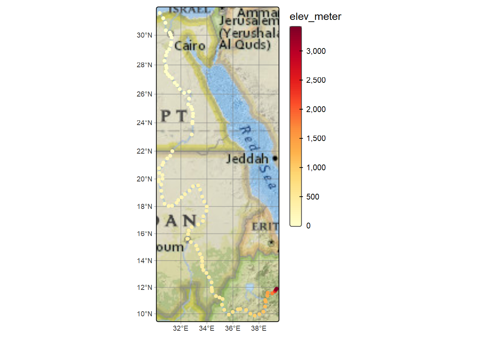
FIGURE 7.6: Nile River points, colored by channel slope
ggplot(bNile, aes(longd,elev_meter)) + geom_line(aes(col=s), linewidth=1.5) +
scale_color_gradient(low="green", high="red") +
ggtitle("Nile River to Blue Nile longitudinal profile")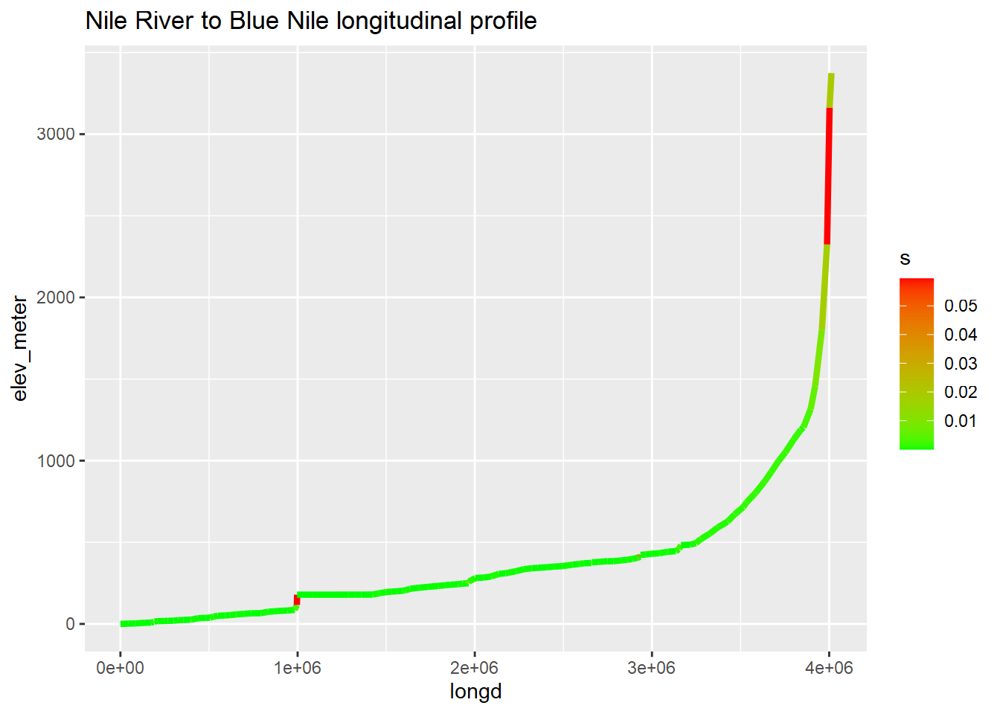
FIGURE 7.7: Nile River channel slope as range of colors from green to red, with great circle channel distances derived using the haversine method
7.2.3.2 Distances among features
The sf st_distance and terra distance functions derive distances between features, either among features of one data set object or between all features in one and all features in another data set.
To see how this works, we’ll look at a purposefully small dataset: a selection of Marble Mountains soil CO2 sampling sites and in-cave water quality sampling sites. We’ll start by reading in the data, and filtering to just get cave water samples and a small set of nearby soil CO2 sampling sites:
library(igisci); library(sf); library(tidyverse)
soilCO2all <- st_read(ex("marbles/co2july95.shp"))
cave_H2Osamples <- st_read(ex("marbles/samples.shp")) %>%
filter((SAMPLES_ID >= 50) & (SAMPLES_ID < 60)) # these are the cave samples
soilCO2 <- soilCO2all %>% filter(LOC > 20) # soil CO2 samples in the areaFigure 7.8 shows the six selected soil CO2 samples.
library(tmap); library(maptiles)
tmap_mode("plot")
bbox <- tmaptools::bb(soilCO2, ext=1.1) # extends the map area a bit from the points
tm_basemap(server="OpenTopoMap") + tm_graticules(alpha=0.5) +
tm_shape(soilCO2, bbox=bbox) +
tm_symbols(fill="CO2_", fill.scale=tm_scale_continuous(values="parks.denali"),
fill.legend=tm_legend(frame=F)) +
tm_shape(soilCO2) + tm_text("LOC", size=0.5, col="orange")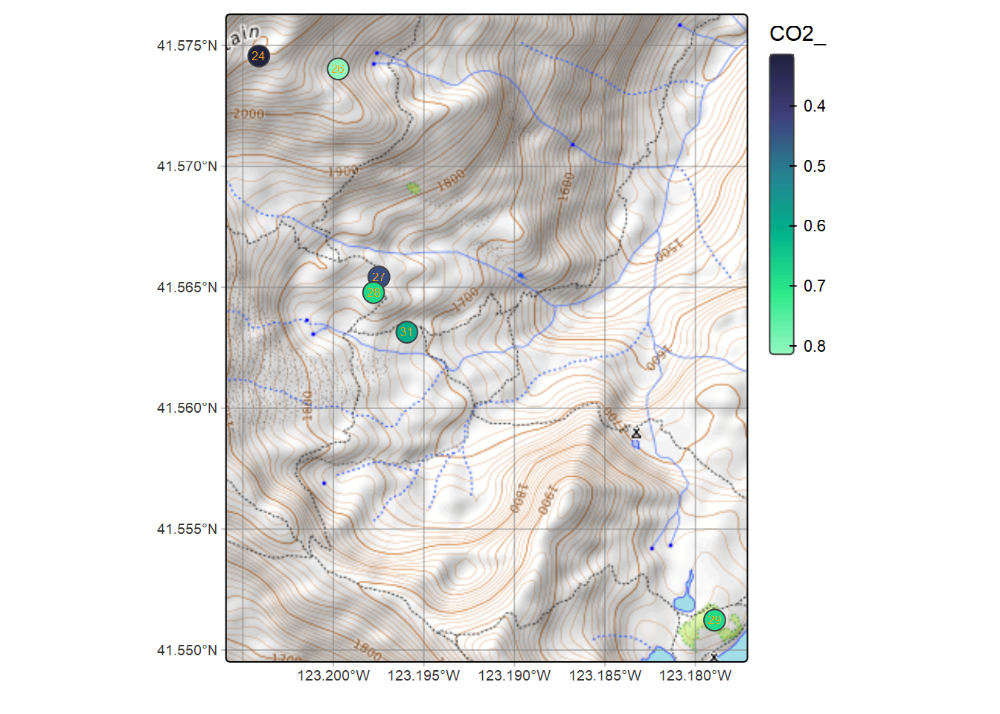
FIGURE 7.8: Selection of soil CO2 sampling sites, July 1995
If you just provide the six soil CO2 sample points as a single feature data set input to the st_distance function, it returns a matrix of distances between each, with a diagonal of zeros where the distance would be to itself:
## Units: [m]
## 1 2 3 4 5 6
## 1 0.0000 370.5894 1155.64981 1207.62172 3333.529 1439.2366
## 2 370.5894 0.0000 973.73559 1039.45041 3067.106 1248.9347
## 3 1155.6498 973.7356 0.00000 75.14093 2207.019 283.6722
## 4 1207.6217 1039.4504 75.14093 0.00000 2174.493 237.7024
## 5 3333.5290 3067.1061 2207.01903 2174.49276 0.000 1938.2985
## 6 1439.2366 1248.9347 283.67215 237.70236 1938.299 0.0000Then we’ll look at distances between this same set of soil CO2 samples with water samples collected in caves, where the effect of elevated soil CO2 values might influence solution processes reflected in cave waters (Figure 7.9).
library(tmap)
tmap_mode("plot")
bbox <- tmaptools::bb(st_union(cave_H2Osamples, soilCO2),ext=1.1)
tm_basemap("OpenTopoMap") + #tm_graticules() +
tm_shape(cave_H2Osamples, bbox=bbox) +
tm_symbols(fill="CATOT", fill.scale=tm_scale_continuous(values="brewer.blues"),
fill.legend=tm_legend(frame=F))+
tm_shape(soilCO2) +
tm_symbols(fill="CO2_", fill.scale=tm_scale_continuous(values="brewer.reds"),
fill.legend=tm_legend(frame=F))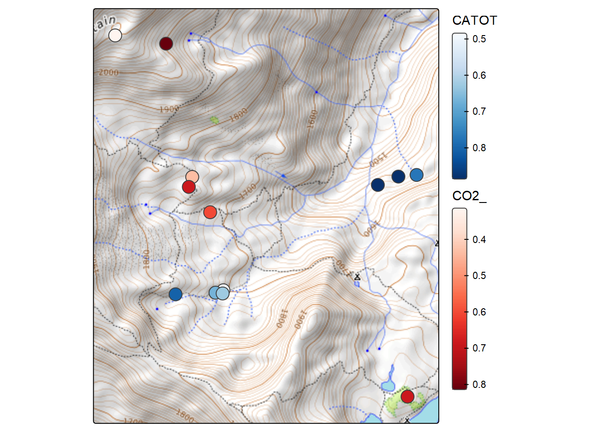
FIGURE 7.9: Selection of soil CO2 and in-cave water samples
## Units: [m]
## [,1] [,2] [,3] [,4] [,5] [,6] [,7]
## [1,] 2384.210 2271.521 2169.301 1985.6093 1980.0314 2004.1697 1905.9543
## [2,] 2029.748 1920.783 1826.579 1815.2653 1820.0496 1835.9465 1798.1216
## [3,] 1611.381 1480.688 1334.287 842.8228 846.3210 863.1026 849.7313
## [4,] 1637.998 1506.938 1357.582 781.9741 782.4215 801.6262 776.0732
## [5,] 1590.469 1578.730 1532.465 1526.3315 1567.5677 1520.1399 1820.3651
## [6,] 1506.358 1375.757 1220.000 567.8210 578.1919 589.1443 638.8615In this case, the six soil CO2 samples are the rows, and the seven cave water sample locations are the columns. We aren’t really relating the values but just looking at distances. An analysis of this data might not be very informative because the caves aren’t very near the soil samples, and conduit cave hydrology doesn’t lend itself to looking at euclidean distance, but the purpose of this example is just to comprehend the results of the sf::st_distance or similarly the terra::distance function.
7.2.3.3 Distance to the nearest feature, abstracted from distance matrix
However, let’s process the matrix a bit to find the distance from each soil CO2 sample to the closest cave water sample:
soilCO2d <- soilCO2 %>% mutate(dist2cave = min(soilwater[1,]))
for (i in 1:length(soilwater[,1])) soilCO2d[i,"dist2cave"] <- min(soilwater[i,])
soilCO2d %>% dplyr::select(DESCRIPTIO, dist2cave) %>% st_set_geometry(NULL)## DESCRIPTIO dist2cave
## 1 Super Sink moraine, low point W of 241 1905.9543 [m]
## 2 Small sink, first in string on hike to SuperSink 1798.1216 [m]
## 3 meadow on bench above Mbl Valley, 25' E of PCT 842.8228 [m]
## 4 red fir forest S of upper meadow, 30' W of PCT 776.0732 [m]
## 5 saddle betw Lower Skyhigh (E) & Frying Pan 1520.1399 [m]
## 6 E end of wide soil-filled 10m fissure N of lower camp 567.8210 [m]… or since we can also look at distances to lines or polygons, we can find the distance from CO2 sampling locations to the closest stream (Figure 7.10),
library(igisci); library(sf); library(tidyverse)
soilCO2all <- st_read(ex("marbles/co2july95.shp"))
streams <- st_read(ex("marbles/streams.shp"))strCO2 <- st_distance(soilCO2all, streams)
strCO2d <- soilCO2all %>% mutate(dist2stream = min(strCO2[1,]))
for (i in 1:length(strCO2[,1])) strCO2d[i,"dist2stream"] <- min(strCO2[i,])tm_basemap("OpenTopoMap") + tm_graticules() +
tm_shape(streams) + tm_lines(col="blue") +
tm_shape(strCO2d) + tm_symbols(fill="dist2stream",
fill.legend=tm_legend(frame=F)) 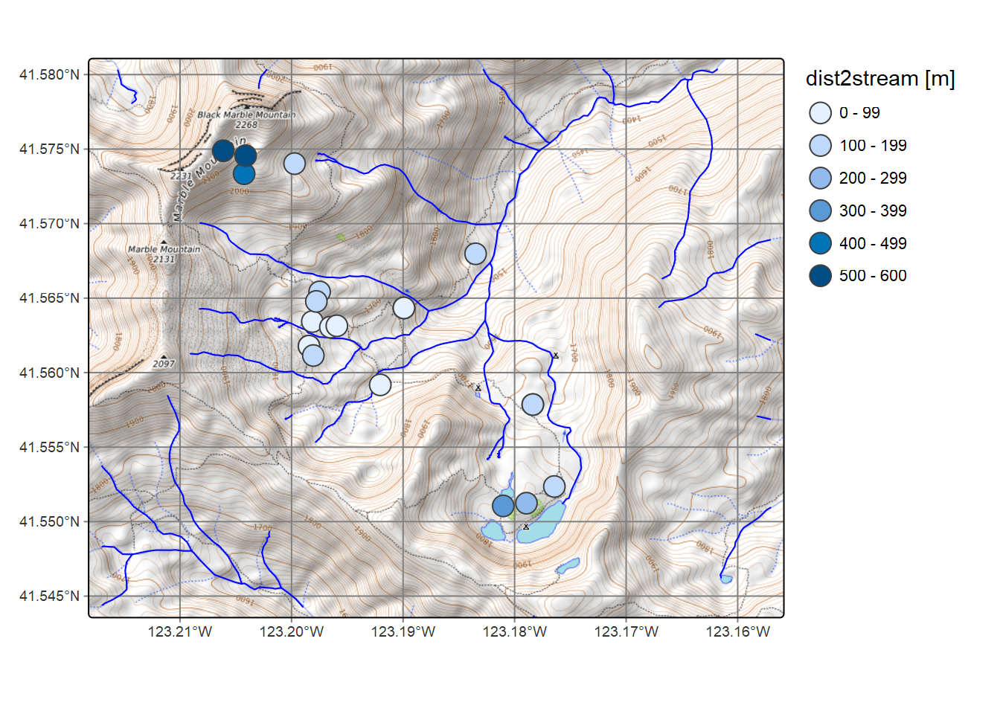
FIGURE 7.10: Distance from CO2 samples to closest streams (not including lakes)
7.2.3.4 Nearest feature detection
As we just saw, the matrix derived from st_distance when applied to feature data sets could be used for further analyses, such as this distance to the nearest place. But there’s another approach to this using a specific function that identifies the nearest feature: st_nearest_feature, so we’ll look at this with the previously filtered northern Sierra places and weather stations. We start by using st_nearest_feature to create an index vector of the nearest place to each station, and grab its location geometry:
nearest_Place <- st_nearest_feature(nSierraStations, nSierraPlaces)
near_Place_loc <- nSierraPlaces$geometry[nearest_Place]Then add the distance to that nearest place to our nSierraStations sf. Note that we’re using st_distance with two vector inputs as before, but ending up with just one distance per feature (instead of a matrix) with the setting by_element=TRUE…
nSierraStations <- nSierraStations %>%
mutate(d2Place = st_distance(nSierraStations, near_Place_loc, by_element=TRUE),
d2Place = units::drop_units(d2Place))… and of course map the results (Figure 7.11):
tm_basemap("OpenStreetMap") + tm_graticules(alpha=0.5) +
tm_shape(nSierraCo) + tm_borders() + tm_text("NAME") +
tm_shape(nSierraStations) + tm_symbols(fill="d2Place") +
tm_shape(nSierraPlaces) + tm_symbols(fill="red", fill_alpha=0.5, size=0.5, shape=24,
fill.legend=tm_legend(frame=F))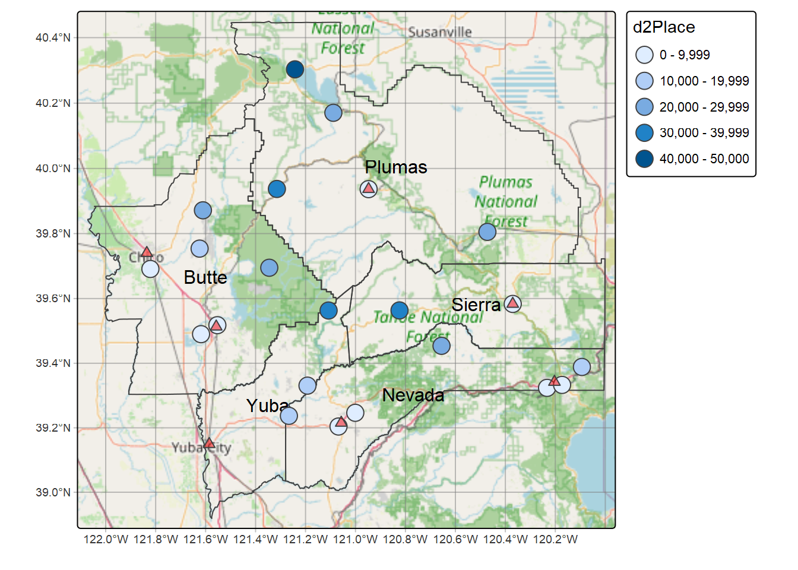
FIGURE 7.11: Distance to towns (places) from weather stations
That’s probably enough examples of using distance to nearest feature so we can see how it works, but to see an example with a larger data set, an example in Appendix A7.2 looks at the proximity of TRI sites to health data at census tracts.
7.2.4 Buffers
Creating buffers, or polygons defining the area within some distance of a feature, is commonly used in GIS. Since you need to specify that distance (or read it from a variable for each feature), you need to know what the horizontal distance units are for your data. If GCS, these will be decimal degrees and 1 degree is a long way, about 111 km (or 69 miles), though that differs for longitude where 1 degree of longitude is 111 km * cos(latitude). If in UTM, the horizontal distance will be in metres, but in the US, state plane coordinates are typically in feet. So let’s read the trails shapefile from the Marble Mountains and look for its units:
Then we know we’re in metres, so we’ll create a 100 m buffer this way (Figure 7.12).
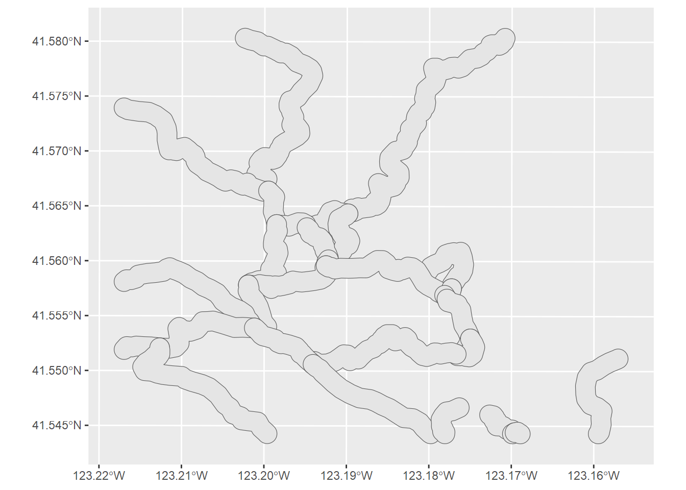
FIGURE 7.12: 100 m trail buffer, Marble Mountains
library(igisci); library(terra); library(tmap)
trailsV <- vect(ex("marbles/trails.shp"))
trail_bufft = aggregate(buffer(trailsV,100))
tm_graticules(alpha=0.5) + tm_shape(trail_bufft) + tm_polygons()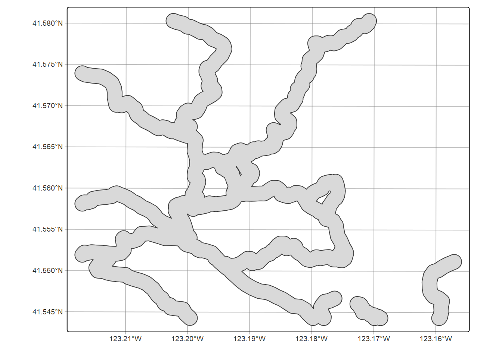
7.2.4.1 The units package
Since the spatial data is in UTM, we can just specify the distance in metres. However if the data was in decimal degrees of latitude and longitude (GCS), we would need to let the function know that we’re providing it metres so it can transform that to work with the GCS, using units::set_units(100, "m") instead of just 100, for the above example where we are creating a 100 m buffer.
7.2.5 Spatial overlay: union and intersection
Overlay operations are described in the sf cheat sheet under “Geometry operations”. These are useful to explore, but a couple we’ll look at are union and intersection.
Normally these methods have multiple inputs, but we’ll start with one that can also be used to dissolve boundaries, st_union – if only one input is provided it appears to do a dissolve (Figure 7.13):
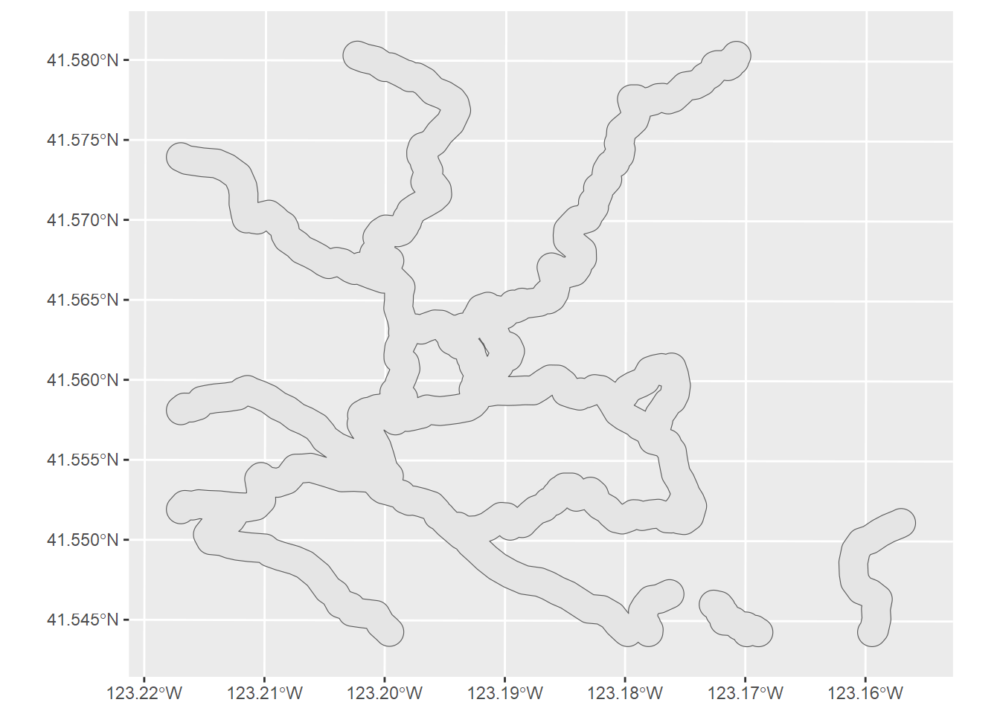
FIGURE 7.13: Unioned trail buffer, dissolving boundaries
For a clearer example with the normal multiple input, we’ll intersect a 100 m buffer around streams and a 100 m buffer around trails …
streams <- st_read(ex("marbles/streams.shp"))
trail_buff <- st_buffer(trails, 100)
str_buff <- st_buffer(streams,100)
strtrInt <- st_intersection(trail_buff,str_buff)…to show areas that are close to streams and trails (Figure 7.14):
ggplot(strtrInt) + geom_sf(fill="green") +
geom_sf(data=trails, col="red") +
geom_sf(data=streams, col="blue")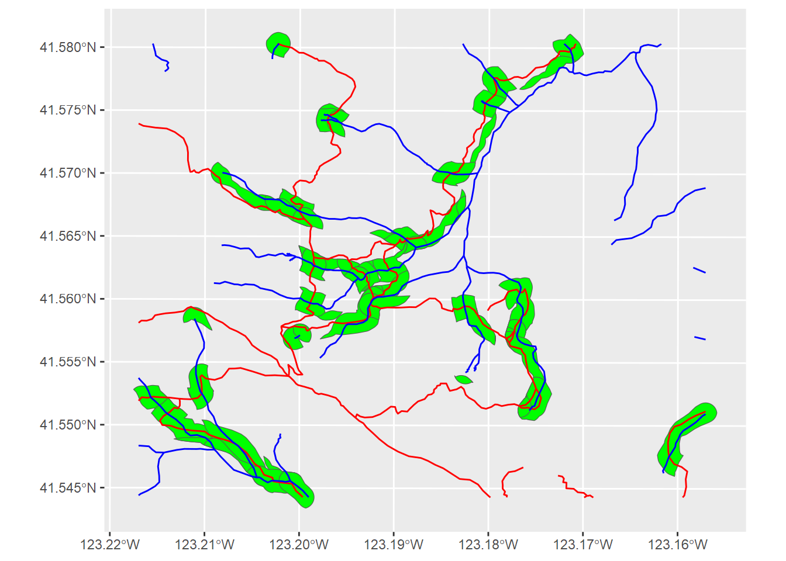
FIGURE 7.14: Intersection of trail and stream buffers
Or how about a union of these two buffers? We’ll also dissolve the boundaries using union with a single input (the first union) to dissolve those internal overlays (Figure 7.15):
strtrUnion <- st_union(st_union(trail_buff,str_buff))
ggplot(strtrUnion) + geom_sf(fill="green") +
geom_sf(data=trails, col="red") +
geom_sf(data=streams, col="blue")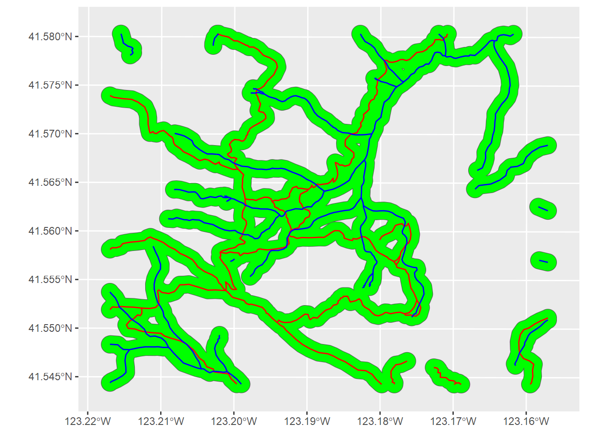
FIGURE 7.15: Union of two sets of buffer polygons
Note that it is common to need to use
st_make_valid()to fix slivers in buffers, though this isn’t necessary here, and may occur more frequently with coarser scale data.
7.2.6 Clip with st_crop
Clipping a GIS layer to a rectangle (or to a polygon) is often useful. We’ll clip to a rectangle based on latitude and longitude limits we’ll specify, however since our data is in UTM, we’ll need to use st_transform to get it to the right coordinates (Figure 7.16).
xmin=-123.21; xmax=-123.18; ymin=41.55; ymax=41.57
clipMatrix <- rbind(c(xmin,ymin),c(xmin,ymax),c(xmax,ymax),
c(xmax,ymin),c(xmin,ymin))
clipGCS <- st_sfc(st_polygon(list(clipMatrix)),crs=4326)
bufferCrop <- st_crop(strtrUnion,st_transform(clipGCS,crs=st_crs(strtrUnion)))
bnd <- st_bbox(bufferCrop)
ggplot(bufferCrop) + geom_sf(fill="green") +
geom_sf(data=trails, col="red") +
geom_sf(data=streams, col="blue") +
coord_sf(xlim = c(bnd[1], bnd[3]), ylim = c(bnd[2], bnd[4]))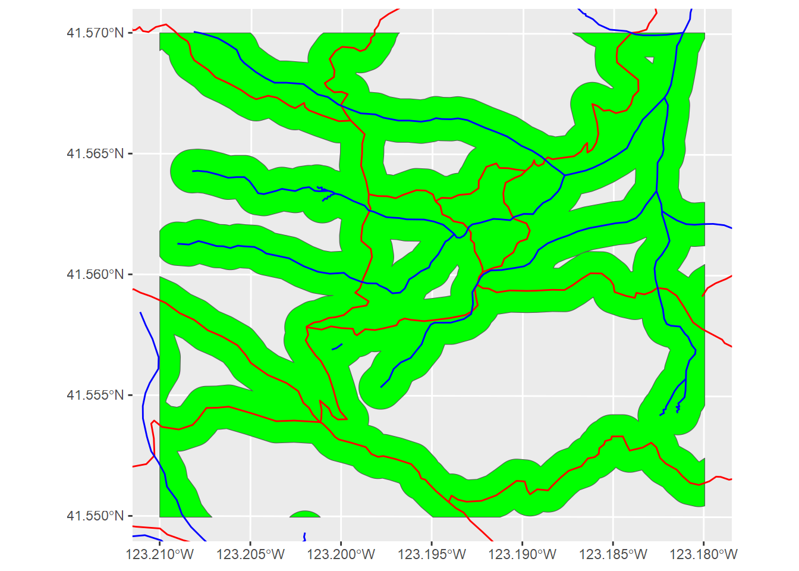
FIGURE 7.16: Cropping with specified x and y limits
7.2.6.1 sf or terra for vector spatial operations?
Note: there are other geometric operations in sf beyond what we’ve looked at. See the cheat sheet and other resources at https://r-spatial.github.io/sf .
The terra system also has many vector tools (such as terra::union and terra::buffer), that work with and create SpatVector spatial data objects. As noted earlier, these S4 spatial data can be created from (S3) sf data with terra::vect and vice versa with sf::st_as_sf. We’ll mostly focus on sf for vector and terra for raster, but to learn more about SpatVector data and operations in terra, see https://rspatial.org.
For instance, there’s a similar terra operation for one of the things we just did, but instead of using union to dissolve the internal boundaries like st_union did, uses aggregate to remove boundaries between polygons with the same codes:
7.2.7 Spatial join with st_join
A spatial join can do many things, but we’ll just look at its simplest application – connecting a point with the polygon that it’s in. In this case, we want to join the attribute data in BayAreaTracts with EPA Toxic Release Inventory (TRI) point data (at factories and other point sources) and then display a few ethnicity variables from the census, associated spatially with the TRI point locations. We’ll be making better maps later; this is a quick plot() display to show that the spatial join worked (Figure 7.17).
library(igisci); library(tidyverse); library(sf)
TRI_sp <- st_as_sf(read_csv(ex("TRI/TRI_2017_CA.csv")),
coords = c("LONGITUDE", "LATITUDE"), crs=4326) %>%
st_join(st_make_valid(BayAreaTracts)) %>%
filter(!is.na(TRACT)) %>% # removes points not in BayAreaTracts
dplyr::select(POP2012:HISPANIC)
plot(TRI_sp)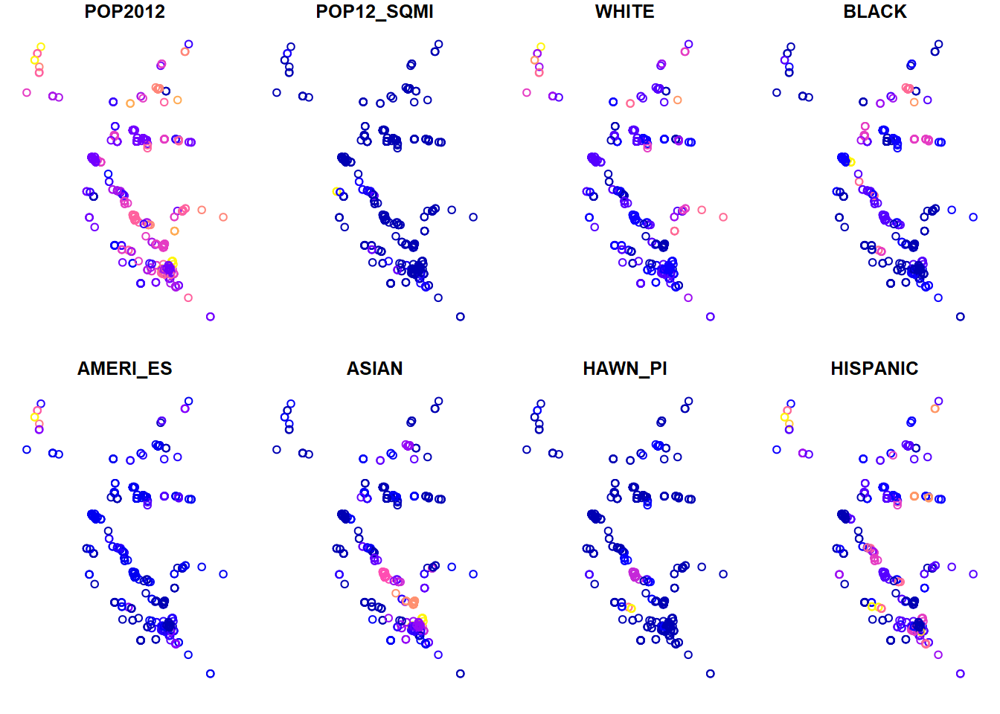
FIGURE 7.17: TRI points with census variables added via a spatial join
7.2.8 Further exploration of spatial analysis
We’ve looked at a small selection of spatial analysis functions; there’s a lot more we can do, and the R spatial world is rapidly growing. There are many other methods discussed in the “Spatial data operations” and “Geometry operations” chapters of Geocomputation (https://geocompr.robinlovelace.net/, Lovelace et al. (2019)) that are worth exploring, and still others in the terra package described at https://rspatial.org, Hijmans (n.d.).
For example, getting a good handle on coordinate systems is certainly an important area to learn more about, and you will find coverage of transformation and reprojection methods in the “Reprojecting geographic data” and data access methods in the “Geographic data I/O” chapter of Geocomputation, and in the “Coordinate Reference Systems” section of https://rspatial.org. The Simple Features for R reference (Simple Features for r (n.d.)) site includes a complete reference for all of its functions, as does https://rspatial.org for terra.
And then there’s analysis of raster data, but we’ll leave that for the next chapter.
7.3 Exercises: Spatial Analysis
Exercise 7.1 Maximum Elevation Assuming you wrote them in the last chapter (exercise questions 5 and 6), read in your western states and peaks data (pay attention to what folder they are stored in), then use a spatial join to add the peak points to the states to provide a new attribute maximum elevation, and use methods from 6.6 to display those as point labels. Note that joining from the states to the peaks works because there’s a one-to-one correspondence between states and maximum peaks. (If you didn’t write them, you’ll need to repeat your code that built them from the previous chapter.)
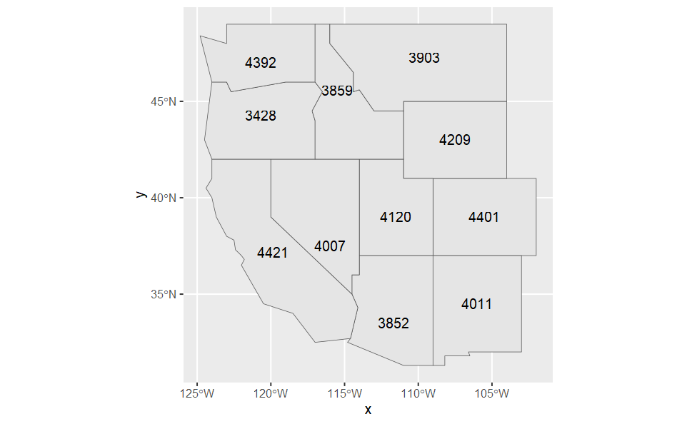
Exercise 7.2 Using two shape files of your own choice, not from igisci, read them in as simple features data, and perform a spatial join to join the polygons to the point data. Then display the point feature data frame, and using methods from 4.4, create a scatter plot or boxplot graph (depending on the nature of your variables) where the two variables are related, preferably with a separate factor to provide color. [If you do not have available shapefiles, you can use co2july95.shp and geology.shp from the marbles folder in extdata, but first copy these to your project folder; one point of this is to not solely depend on igisci and be comfortable bringing in your own data.]
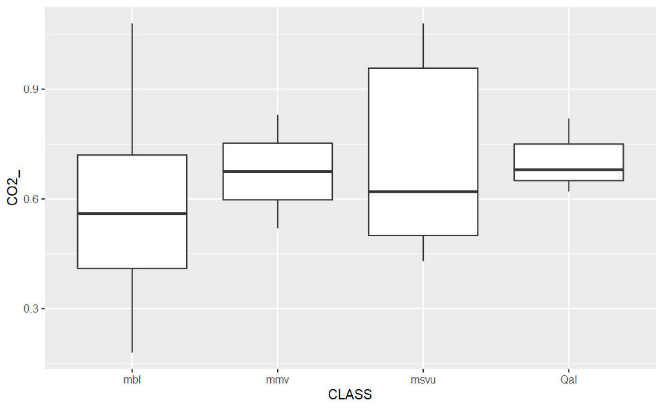
Exercise 7.3 From the above spatially joined data create a map where the points are colored by data brought in from the spatial join; can be either a categorical or continuous variable.
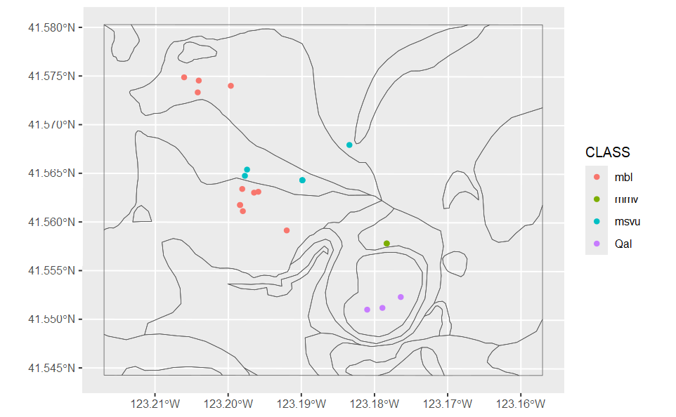
Exercise 7.4 Transect Buffers: Using data described in 10.5.3.1, create a map using cartographic methods 6.8 of transects, the mainland (for context, similar to a basemap), and a 1000 m buffer around the transect points, using methods from 7.2.4 and 7.2.5. Note that mainland.shp is in the SFmarine folder of the igisci extdata.
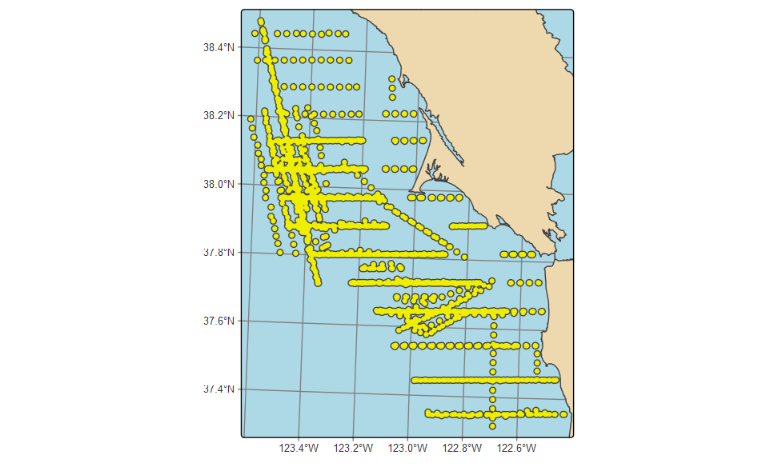
Exercise 7.5 Create an sf that represents all areas within 50 km (see 7.2.4) of a TRI facility in California that has >10,000 pounds of total stack air release for all gases, clipped (intersected) with the state of California as provided in the CA counties data set. Then use this to create a map of California showing the clipped buffered areas in red, with California counties and those selected large-release TRI facilities in black dots, as shown here. For the buffer distances, make sure to use the function described in 7.2.4.1 to get the units right despite the map being in GCS. Methods from 3.4.5 will be useful, and you’ll need to use st_make_valid with buffer results to avoid errors.
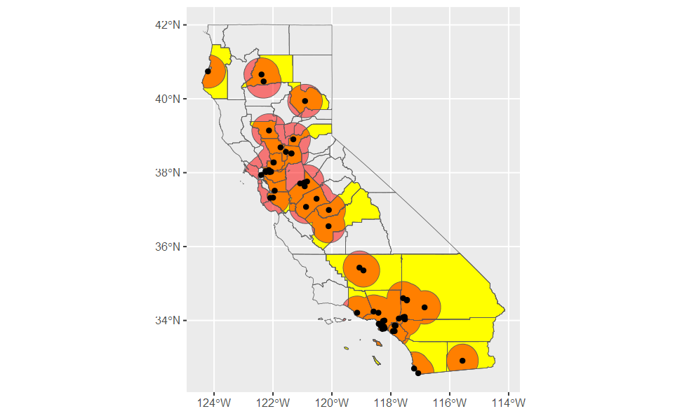